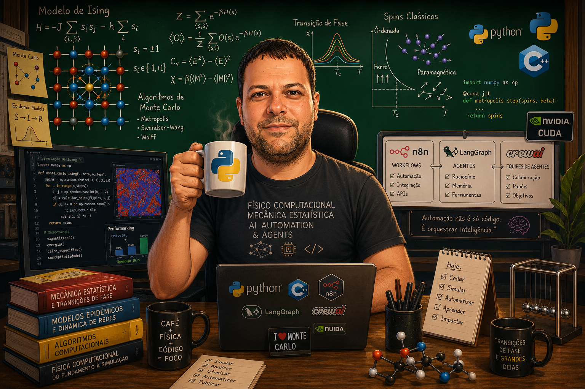

Física Computacional & Inteligência Artificial
Modelagem Científica aplicada a Problemas Reais.
Sou o Lenilson, professor e pesquisador na UESPI e doutorando em Física Computacional na UFPI. Em minha pesquisa atual, utilizo algoritmos de Machine Learning para mapear fenômenos críticos e transições de fase em modelos da mecânica estatística de equilíbrio e não-equilíbrio.
Utilizo, também, esse mesmo rigor analítico e metodológico para arquitetar soluções tecnológicas. Através da fusão entre a ciência de dados profunda, engenharia de software e modelos de linguagem (LLMs), desenvolvo sistemas inteligentes e robustos workflows automatizados. O objetivo é converter dados complexos em eficiência operacional e soluções estratégicas de alto valor.
